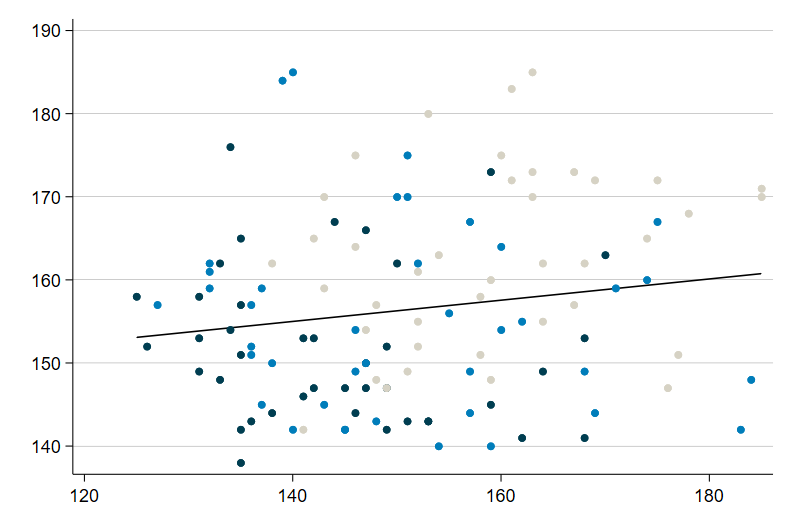

GESIS Methodenseminar 2020
Skript zur Stata-Übung
Stand: 07.08.2020
Herzlich Willkommen!
Hier entsteht das Begleitskript zum GESIS Methodenseminar “Uni- und bivariate Statistik mit Stata” von und mit Sebastian Schnettler und Andreas Filser vom 14.09 bis zum 18.09.2020.
Weitere Informationen zum Methodenseminar, den Link zur Anmeldung und alles weitere finden Sie hier
Los geht’s mit dem Einstieg
